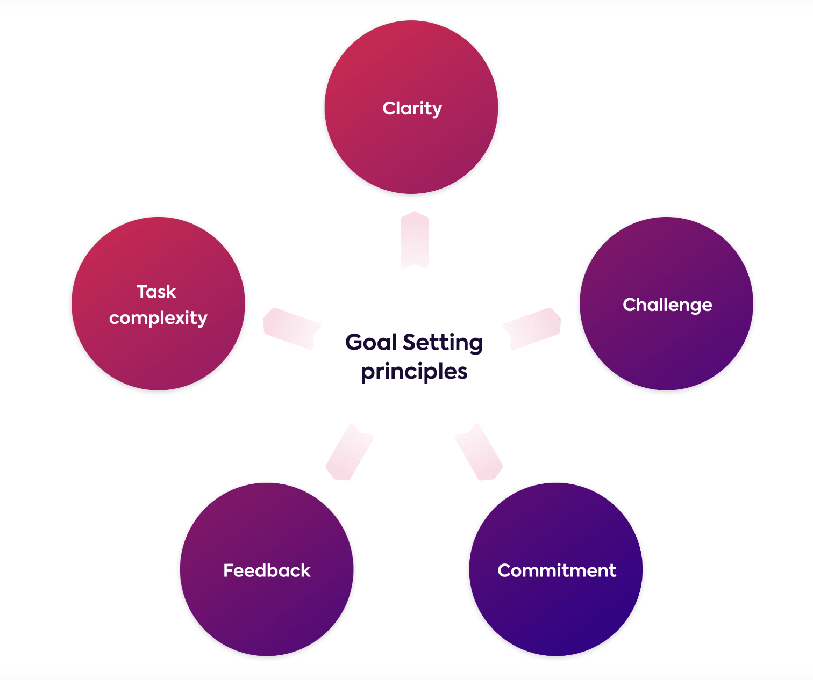

Setting Goals
Goal setting in communication is important because it helps provide direction, focus, and clarity. It builds effective communication by helping to facilitate performance. Goals help clarify the focus of the message, enable feedback, and align values and intentions. Under the right setting, goals can be a powerful technique to motivate and enhance performance.
Setting goals can aid in establishing individual and collaborative responsibilities. A well-developed theory by Locke and Latham analyzes goal setting and motivation. This review looks at the importance of goal setting in communication and its impact on work performance and motivation. This theory focuses on the relationship of goals and performance. It provides a framework for how goals should be structured and written. It suggests that goals should be challenging, specific, time-focused, and linked to feedback. A goal that is challenging provides an opportunity to raise performance. Having the goal be specific can help counter misunderstanding and uncertainty. Feedback helps provide information on progress, and can help guide understanding of what is working and what needs to improve. Feedback can also be viewed as motivating. Individuals can see progress toward a goal and feel a sense of accomplishment. For most people goals are most effective when they include a deadline of completion. Deadlines can serve as a time-control mechanism. Without a deadline, goals can lack direction and focus, making it difficult to stay on track. By following these steps, an individual can apply goal setting to their communication strategy to develop a plan that is productive, quantifiable and focused.
